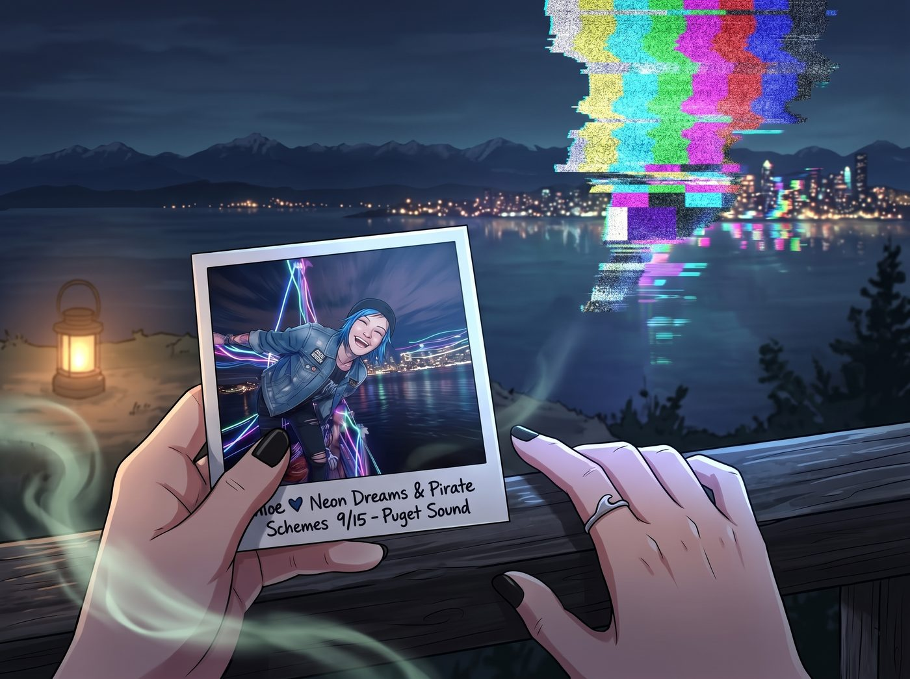

倒灌的記憶

那張帶著動態模糊的寶麗來底片，靜靜地躺在 Chloe 的掌心裡。化學顯影劑的氣味在微涼的夜風中散開，一切原本都沉浸在完美的復古浪漫之中。
直到某種類似老舊電視機收不到訊號的沙沙聲，突兀地在空氣中響起。
那不是卡式錄音機裡的底噪。那聲音彷彿是從空間的裂縫裡直接鑽出來的，帶著一種令人耳膜刺痛的高頻蜂鳴。
一、時空的倒灌
Chloe 握著照片的手指突然一僵。在她的指尖觸碰到那張剛剛成型的物理錨點的瞬間，某種被壓抑了數年、龐大到足以摧毀理智的時空亂流，順著底片的化學物質，毫無預警地以倒灌的姿態，狠狠砸進了她的腦海！
「轟——！」
海盜塔頂的霓虹燈、凱迪拉克沙發、太平洋的海風，在 Chloe 的感知中瞬間被抽離。
取而代之的，是無數個破碎、扭曲、滴著鮮血與眼淚的平行時空碎片。她看到了。她第一次，以 Max 的第一視角，清清楚楚地看到了那些被時空掩埋的真相。
她聽到了女廁所裡那聲震耳欲聾的槍響，而自己倒在冰冷的瓷磚上，鮮血流了一地；她感受到了 Max 躲在隔間角落裡，捂著嘴發出絕望的無聲尖叫。她看到了自己坐在輪椅上，脖子以下全部癱瘓，呼吸機發出沉重的喘息，而自己正流著淚懇求 Max 加大嗎啡的劑量殺死她。她聞到了那間暗房裡令人作嘔的消毒水味，看到了被綁在椅子上、眼神空洞的自己，以及為了救她而無數次撕裂照片、鼻血流得染紅了整件衣服的 Max。最後，是那場摧毀一切的巨大龍捲風。她感受到了 Max 站在燈塔下，面對著小鎮的毀滅與保全她生命之間的終極撕裂，那種靈魂幾乎要被扯碎的痛苦與自責。
無數次倒轉。無數次看著她死去。無數次在時間的廢墟裡把她從死神手裡生拉硬拽回來。
「啪嗒。」Chloe 手裡的精釀啤酒瓶掉在了鐵板上，摔得粉碎。
那張寶麗來照片也從她顫抖的指尖滑落。
二、崩潰的瞬間
「Chloe？！」Max 瞬間察覺到了異樣。她看著原本還在笑著的 Chloe，此刻臉色慘白如紙，藍色的瞳孔劇烈地收縮著，彷彿一個剛從深海裡被打撈上來、瀕臨溺水的人，正大口大口地喘著粗氣。
「不……老天……Maxine……」Chloe 痛苦地捂住頭，身體不受控制地蜷縮在沙發上。大腦超載的劇痛和那些排山倒海般湧入的絕望記憶，讓她的眼淚瞬間決堤。
Max 嚇壞了。作為時間能力的擁有者，她立刻意識到發生了什麼。這張帶著強烈情感共鳴的新照片，意外地成為了某個超自然導體，將她大腦深處那些被鎖死的跳躍記憶，單向傳輸給了 Chloe。
「看著我！Chloe！看著我！那些都過去了！我們在這裡！我們安全了！」Max 驚慌失措地撲過去，雙手捧住 Chloe 滿是冷汗和淚水的臉頰，聲音因為恐懼而發抖，「對不起……對不起……我不想讓妳看到這些的……我不想讓妳知道我到底搞砸了多少次……」
Max 害怕極了。她一直把這些記憶當作自己一個人的秘密墳墓。她害怕 Chloe 知道那些殘酷的真相後，會因為那份沉重到畸形的愛和犧牲而感到崩潰，或者覺得她是一個操控時間的怪物。
但 Chloe 沒有推開她。
三、震撼與心疼
在經歷了長達一分鐘的劇烈喘息和記憶消化後，Chloe 猛地抬起頭。那雙佈滿紅血絲的藍色眼睛裡，沒有恐懼，沒有憤怒，只有一種深沉到令人心碎的震撼，以及幾乎要將人揉碎的心疼。
她終於明白了，為什麼這個曾經有些懦弱的文青女孩，現在會隨身帶著幾張存檔照片，隨時準備為了這個團隊拼命；她終於明白了，Max 眼神裡那種超越了年齡的滄桑與疲憊到底是從何而來。
「妳這個白痴……妳這個徹頭徹尾的笨蛋……」Chloe 的聲音沙啞得不成樣子，眼淚順著臉頰瘋狂地砸在 Max 的手背上。
她沒有去擦眼淚，而是伸出雙臂，以一種幾乎要將 Max 勒進自己骨血裡的力道，死死地、絕望地抱住了她。
「妳到底一個人背著這些東西走了多遠啊，Maxine……」Chloe 把臉深深地埋進 Max 的頸窩裡，溫熱的眼淚浸透了法蘭絨襯衫，「妳看了我死那麼多次……妳為了我，把自己的靈魂都撕碎了……而我居然還總是像個混蛋一樣對妳發脾氣……」
「不，不怪妳……是我願意的，Chloe，只要妳活著，我做多少次都可以。」Max 緊緊回抱著 Chloe，感受著對方的顫抖，她自己也忍不住崩潰大哭。那些無人可以訴說的、獨自承載了幾年的創傷，在這一刻，終於有了一處可以安放的避風港。
四、陪伴的誓言
太平洋的海風被無形的空氣幕簾擋在外面。在海盜塔這片與世隔絕的霓虹燈下，兩個滿身傷痕的女孩緊緊相擁。
「聽著，Super Max。」許久之後，Chloe 稍微平復了呼吸。她沒有鬆開手，而是緊緊貼著 Max 的額頭，用一種前所未有的、宛如立下承諾般的堅定語氣說道：
「以前，是妳在時間的裂縫裡一次次把我拉回來。但從今以後，我絕對、絕對不會再讓妳一個人去面對那些狗屎一樣的時間線了。不管以後發生什麼，不管是多小、多蠢的事，妳都不需要一個人默默扛。我會一直在妳身邊，陪妳一起面對，妳再也不需要獨自流著鼻血去救我了，聽懂了嗎？」
Max 含著眼淚，看著眼前這個雖然染著藍髮、滿嘴髒話，卻比任何人都勇敢的女孩，用力地點了點頭。
「我聽懂了。」
Chloe 彎下腰，撿起那張掉在地上的、充滿了動態模糊的寶麗來底片。這一次，當她再次觸碰這張照片時，再也沒有了那種時空撕裂的蜂鳴，只有相紙真實的物理觸感。
她小心翼翼地將這張照片放進了自己皮夾克最貼近心臟的口袋裡，然後重新把 Max 攬入懷中，用毛毯將兩人緊緊裹在一起。
在這個充滿了行政黑魔法、資本銅臭、以及聖光普照的瘋狂避難所裡，她們終於徹底接住了彼此破碎的靈魂。這一次，不需要任何照片跳躍，她們也會死死地守住這個當下。